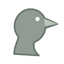

Наблюдение птицы
Об атласе
Карта объединяет 626 наблюдений 108 видов за 2020–2025 годы в Дубне и в пределах 3 км от её границы.
Источник — iNaturalist. В выборку вошли наблюдения Research Grade с открытыми координатами и указанной погрешностью до 250 м. Ещё 109 менее точных записей сохранены в проекте QGIS отдельно.
Цвет сетки показывает количество зарегистрированных наблюдений. Он зависит от активности наблюдателей. Крайние клетки обрезаны по границе территории.
Наблюдения: авторы iNaturalist, лицензии CC0, CC BY, CC BY-NC. Фотографии: индивидуальные лицензии, в том числе некоммерческие. Границы и подложка: © OpenStreetMap contributors, ODbL.
Подготовка данных и пространственный анализ — QGIS. Веб-карта — Leaflet и Leaflet.markercluster. Учебный проект: Куклин Василий, группа 5011.
Снимок данных: 25 ноября 2026 года. Последующие изменения исходных записей могут не отражаться в атласе.